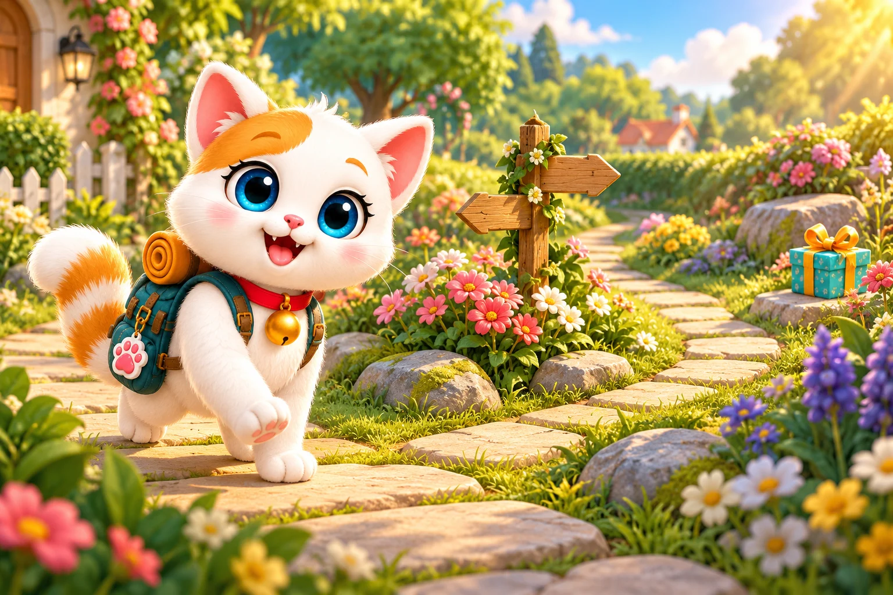

Стежинки Мімі

Куди повернемо?
Допоможи Мімі дійти до подарунка.
Натискай на стрілки та обходь клумби.
3 рівні · 12 нових стежинок · без поспіху
Мімі → подарунок · Клумби обходимо
Обери напрямок для Мімі.
На ноутбуці можна керувати стрілками клавіатури.

Усі подарунки знайдено!
Усі 12 стежинок позаду!
Дякую за чудову пригоду!
Звук не запустився. Натисни «Послухати» або продовжуй за текстовими підказками.